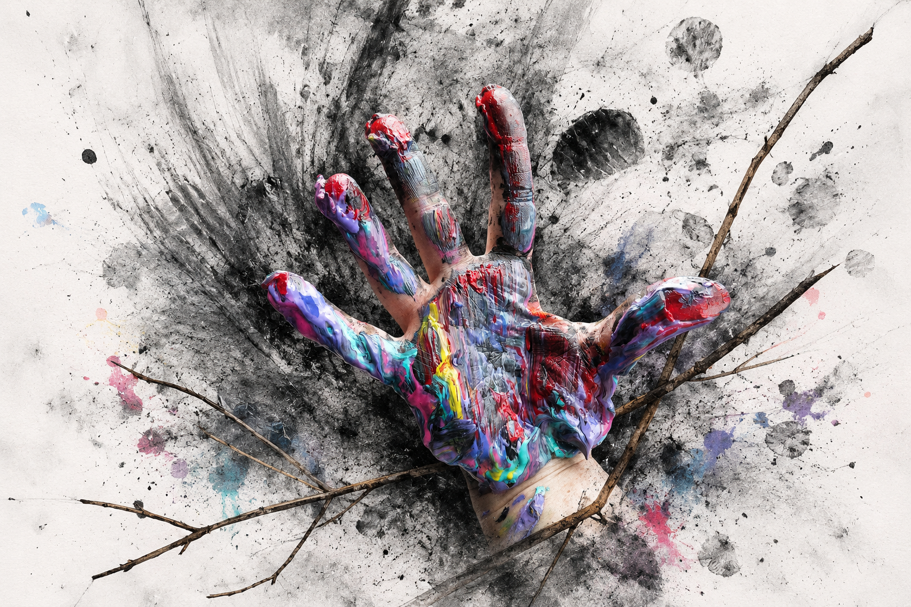

Workshop
Art as Encounter
A guided exploration of intuitive image-making, interruption, memory, and symbolic response through layered visual practice.
Inquire →Creative gatherings rooted in reflection, ecology, embodiment, and artistic practice.

Kate’s workshops invite participants into slower, reflective forms of creative engagement that center process, attention, ecology, and embodied experience.
Blending art-making, dialogue, ritual, and place-based reflection, these gatherings encourage participants to reconnect with intuition, memory, material, and community.
Workshops are designed for artists, educators, retreat spaces, schools, and groups seeking meaningful creative experiences grounded in care, curiosity, and transformation.
Featured Gathering
June 27, 2025 | Boone, North Carolina
A study of body movement, materials, and intuitive mark-making with eco-materials
Workshop
A guided exploration of intuitive image-making, interruption, memory, and symbolic response through layered visual practice.
Inquire →Retreat
A slower, restorative creative gathering focused on transition, healing, reflection, and reconnecting with inner creative rhythms.
Inquire →